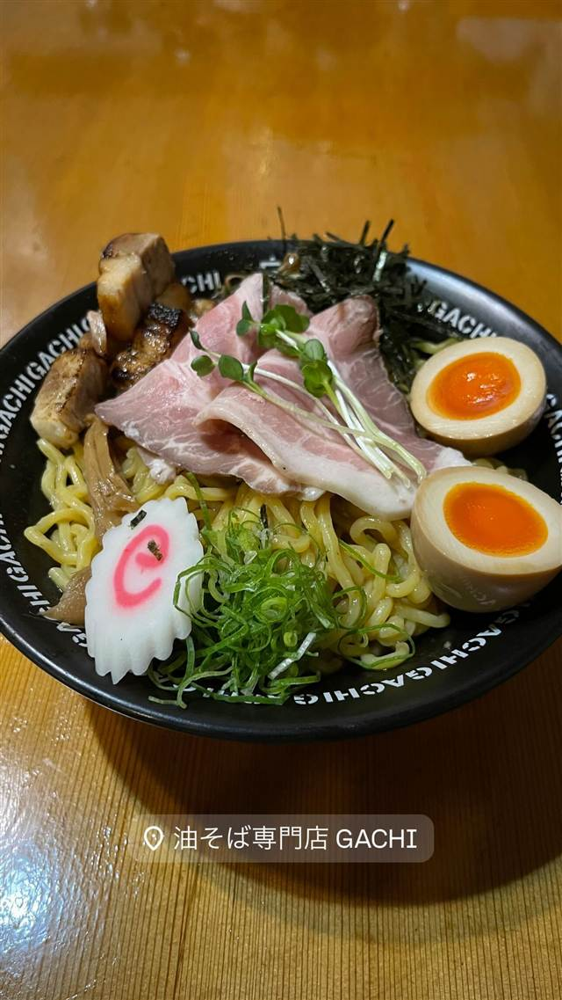
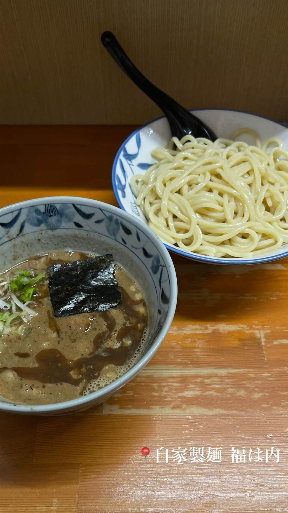

ラーメン · まぜそば・油そば · 曙橋
油そば専門店 GACHI（ガチ）
デュラム粉100%の自家製麺を店内で打ちたて出す油そば
油そば専門店 GACHI
市ケ谷の人気店『麺や庄の』などを手がけるMENSHOグループが2024年10月にオープンした油そば専門店。パスタに使うデュラムセモリナ粉100%の自家製麺を店内の製麺室で打ちたてで提供し、「麺にガチ」のコンセプト通り麺そのものを主役にした一杯が楽しめる。
TRIVIA
豆知識
- 店名「GACHI」は店主が「麺にガチで向き合う」ことに由来
- 製麺所を店内に併設し、打ちたての麺だけを使う
REVIEWS
世間の評判
90.6ラーメンDB3.55食べログ
コシの強い麺と丼の混ぜにくさ
- パスタにも使われるデュラム小麦のコシの強い麺を評価する声が多い
- 300gの大盛りまで無料になるサービスとボリュームの多さを評価する声が多い
- れんげが付属しておらず丼も小さいため混ぜにくいという声もある
ラーメンデータベース 口コミ82件・最新 2026-06
| 創業 | 2024年10月1日開業 |
|---|---|
| 系譜 | 市ケ谷の人気店「麺や庄の」などを展開するMENSHOグループ代表・庄野智治氏が手がける油そば専門店 |
| 看板 | デュラムセモリナ粉100%の自家製麺を使った油そば |
| こだわり | 店の奥に併設した製麺室で打ちたての麺を提供。パスタに使うデュラム小麦を使い、香りとコシの強い麺に仕上げる |
| どこから | 都心 |
| 営業時間 | 月〜日 11:00-15:00、17:00-21:00 |
| 場所 | 曙橋 東京都新宿区払方町付近（曙橋） |
食べたもの：油そば
ひとりで入りやすい
OFFICIAL
店からの知らせ
その日の限定や臨時の休みは、店のXに出ます。
NEARBY
近い店・同じ系統の店
-
 ★
まぜそば・油そば 本郷三丁目
中華蕎麦にし乃
メニューは2種類のみ、生姜香る肉厚ワンタン入りの中華そば
昼 ¥1,000～¥1,999 夜 ¥1,000～¥1,999
★
まぜそば・油そば 本郷三丁目
中華蕎麦にし乃
メニューは2種類のみ、生姜香る肉厚ワンタン入りの中華そば
昼 ¥1,000～¥1,999 夜 ¥1,000～¥1,999
-
 ★
まぜそば・油そば 亀戸駅
しののめヌードル
淡海地鶏と干し椎茸出汁、手もみ自家製麺の油そば
昼 ¥1,000～¥1,999 夜 ¥1,000～¥1,999
★
まぜそば・油そば 亀戸駅
しののめヌードル
淡海地鶏と干し椎茸出汁、手もみ自家製麺の油そば
昼 ¥1,000～¥1,999 夜 ¥1,000～¥1,999
-

★ つけ麺 曙橋駅 自家製麺 福は内 山芋練り込みもちもち麺の濃厚スパイシーなカレーつけめん 昼 ¥1,000～¥1,999 夜 ¥1,000～¥1,999 -
 ★
まぜそば・油そば 亀戸
DURAMENTEI（ドゥラメンテイ）
白醤油と黒醤油、選べる2種スープと自家製ワンタン
昼 ¥1,000～¥1,999 夜 ¥1,000～¥1,999
★
まぜそば・油そば 亀戸
DURAMENTEI（ドゥラメンテイ）
白醤油と黒醤油、選べる2種スープと自家製ワンタン
昼 ¥1,000～¥1,999 夜 ¥1,000～¥1,999
-
 ★
まぜそば・油そば 稲荷町
さんじ
豪州でお好み焼き店を営んだ店主の自家焙煎煮干しラーメン
昼 ～¥999 夜 ¥1,000～¥1,999
★
まぜそば・油そば 稲荷町
さんじ
豪州でお好み焼き店を営んだ店主の自家焙煎煮干しラーメン
昼 ～¥999 夜 ¥1,000～¥1,999
-
 ★
まぜそば・油そば 東中神
自家製麺 まさき
水の綺麗な昭島を選んで出した二郎系の汁なしまぜそば
昼 ～¥999 夜 ～¥999
★
まぜそば・油そば 東中神
自家製麺 まさき
水の綺麗な昭島を選んで出した二郎系の汁なしまぜそば
昼 ～¥999 夜 ～¥999
ONSEN & SAUNA